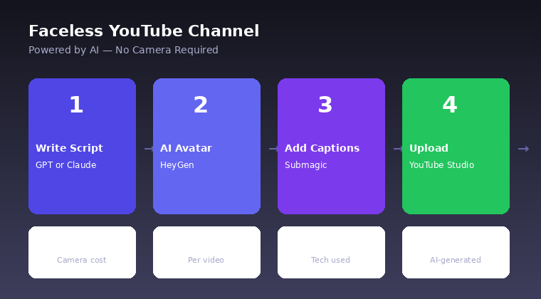
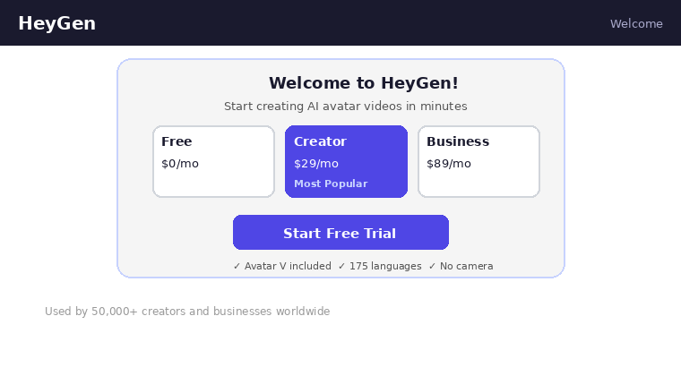
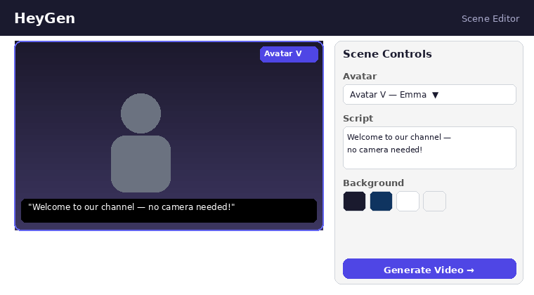
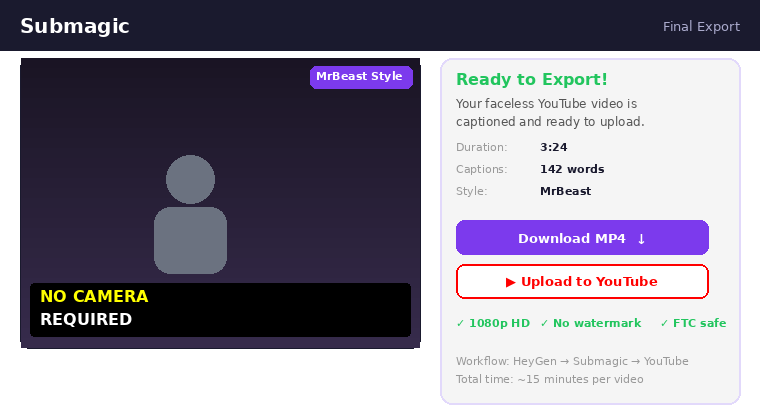

Why HeyGen + Submagic is the 2026 faceless stack
Faceless YouTube is not new, but the tooling has finally caught up in 2026. Two years ago you needed a mix of ElevenLabs, Pictory, and manual CapCut editing to fake a talking head. Today a single HeyGen avatar handles the script, voice, lip-sync, and expression in one render pass — and Submagic layers the viral caption style on top in under 10 minutes.
We picked this specific combo because it is the shortest path from "blank page" to "published YouTube video" that still looks and retains like a premium channel. If you want the full ranked comparison, read our 10 best AI video tools of 2026. If you are new to AI video entirely, start with what is text-to-video AI.

The full stack and cost (April 2026)
| Tool | Role | Plan | Cost/month |
|---|---|---|---|
| HeyGen | AI avatar + voice + lip-sync | Creator | $29 |
| Submagic | Viral animated captions | Starter | $19 |
| ChatGPT or Claude | Script writing | Plus / Pro | $20 |
| CapCut / DaVinci Resolve | Final assembly + B-roll | Free | $0 |
| Pexels / Pixabay | Royalty-free B-roll | Free | $0 |
| YouTube Audio Library | Background music | Free | $0 |
| Total (with AI script help) | ~$59/mo | ||
| Total (without AI script help) | ~$39/mo | ||
For context: a single freelance editor charges $150–$400 per YouTube video. The HeyGen + Submagic stack pays for itself on your second video of the month.
Start with HeyGen free
The free tier gives you 3 videos (up to 3 minutes each) so you can test the avatar workflow before committing.
Try HeyGen Free →Step 1: Pick a faceless niche
Not every niche tolerates a faceless AI host. The ones that do in 2026:
- Finance and investing explainers — viewers want clarity, not charisma
- Tech tutorials and SaaS reviews — screen recording + avatar narration
- Historical stories and mystery content — B-roll heavy, voice-led
- Luxury lifestyle and top-10 lists — visual-first
- Motivational and self-development — avatar + stock footage
- Health and science explainers — authority-led, educational
Validate by finding 3 competing channels under 100k subs that post weekly. If they exist and are growing, the niche works.
Step 2: Write your first script
Open ChatGPT or Claude and prompt: Write a 1,000-word YouTube script for an 8-minute video about [topic], with a 15-second hook, 5 main sections, and a call to subscribe. Target 130–150 words per minute of avatar speech. That means a 10-minute video needs about 1,300–1,500 words.
Step 3: Create a HeyGen account
Go to heygen.com and sign up with Google or email. The Creator plan is $29/month and gives you 15 credits (roughly 15 minutes of finished avatar video) plus watermark-free export. We cover full pricing in our HeyGen review.

Step 4: Choose an avatar and voice
Click Avatars in the left nav. HeyGen ships 200+ stock avatars across age, ethnicity, gender, and wardrobe. For a faceless finance channel, pick a business-casual avatar in a neutral setting. For a historical-stories channel, a narrator-style avatar works better.
Pair with a voice from the Voices library — 300+ voices across 175+ languages. Click Preview on each to audition. If you want a custom voice, HeyGen Creator supports cloning from a 2-minute audio sample.
Step 5: Paste script and render scenes
Click Create Video → Start from Scratch. HeyGen opens the scene editor. Split your script into 30–60 second scenes so you can swap backgrounds mid-video. Paste the first block into the script field, pick a background (solid, gradient, or image), then click + Scene to add the next block.
When all scenes are in, click Submit top-right. HeyGen queues the render — expect 15–25 minutes for a 10-minute video on the Creator plan. Grab a coffee, or batch-write your next script while it renders.

Step 6: Grab B-roll and music
A 10-minute avatar monologue is visually boring. You need B-roll every 8–12 seconds. Free sources:
- Pexels Videos — royalty-free 4K clips
- Pixabay — CC0 footage
- Storyblocks — $15/month if you need scale
- YouTube Audio Library — free music, YouTube-safe
- Epidemic Sound — $15/month, better quality
Download 10–15 B-roll clips matching your script's key topics. Keep them all in one folder named after the video.
Step 7: Assemble in a free editor
Open CapCut (free), DaVinci Resolve (free), or Descript (free tier). Drop the HeyGen MP4 on the main track. Drop music on track 2 at 10–15% volume. Drop B-roll clips on track 3, cutting to them every 8–12 seconds during the avatar monologue. Export as 1080p MP4.
This step takes about 30 minutes once you have a template project saved. For a deeper editing comparison see our VEED vs Kapwing vs Descript review.
Step 8: Add Submagic captions
Upload your assembled video to Submagic. Pick the MrBeast or Hormozi viral template, set emoji frequency to Medium, and click Export at 1080p. This single step adds the animated word-by-word captions that push retention on YouTube long-form from ~45% to ~55% in our tests.
Full Submagic walkthrough here: How to add viral captions with Submagic.

Lock in the full faceless stack
HeyGen for the avatar + Submagic for the captions = $48/month ($41/month on annual billing). Both offer free tiers before you pay.
Get Submagic →Step 9: Publish to YouTube with proper metadata
Open YouTube Studio → Upload. Set:
- Title — 60 characters, include the main keyword in the first 4 words
- Description — first 150 chars are the preview snippet, include your main CTA + link
- Tags — 5–8 specific tags (avoid generic ones like "tutorial")
- Thumbnail — a custom 1280×720 PNG, not a random frame
- End screen — link to your next video and channel subscribe
- Schedule — publish at your audience's peak hour (check YouTube Studio analytics)
Common mistakes to avoid
- Skipping B-roll — 10 minutes of a static avatar tanks retention. Cut every 8–12 seconds.
- Too many avatars — Swapping avatars between videos kills the parasocial bond. Pick one and stick with it.
- Ignoring script pacing — AI voices sound robotic under 120 wpm or over 160 wpm. Stay in the 130–150 sweet spot.
- Uploading the HeyGen export raw — Without B-roll + captions it looks like AI slop. Always add both.
FAQ
Ready to launch your faceless channel?
Start with the HeyGen free tier, add Submagic Starter for $19/month, and publish your first video this week.
Start with HeyGen →